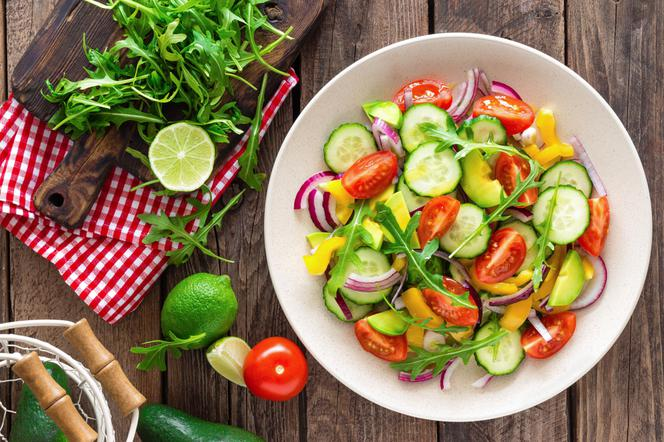

Tomato salad

This healthy tomato salad is really one of the most simple sides. Simply combine garden fresh tomatoes, onions, and a sprinkle of herbs.
Ingredients:
- tomatoes
- cucumbers
- onion
- paprika
- arugula
- spices: usually salt and pepper
Follow the steps:
- Wash all vegetables and peel the onion.
- Slice everything as you like best!
- Put everything in a bowl, season and mix together.
- Serve the salad on a plate and garnish with arugula.
Bon Appetit!